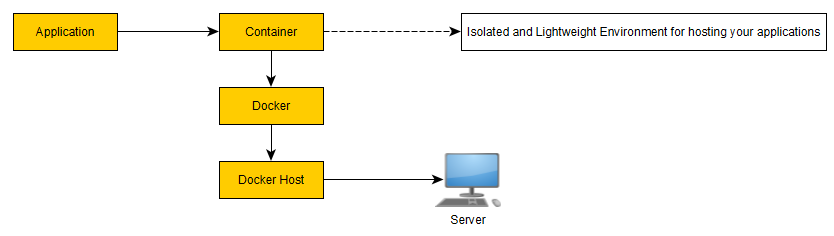
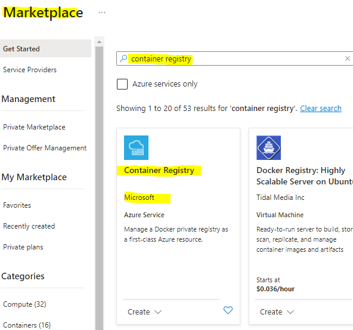
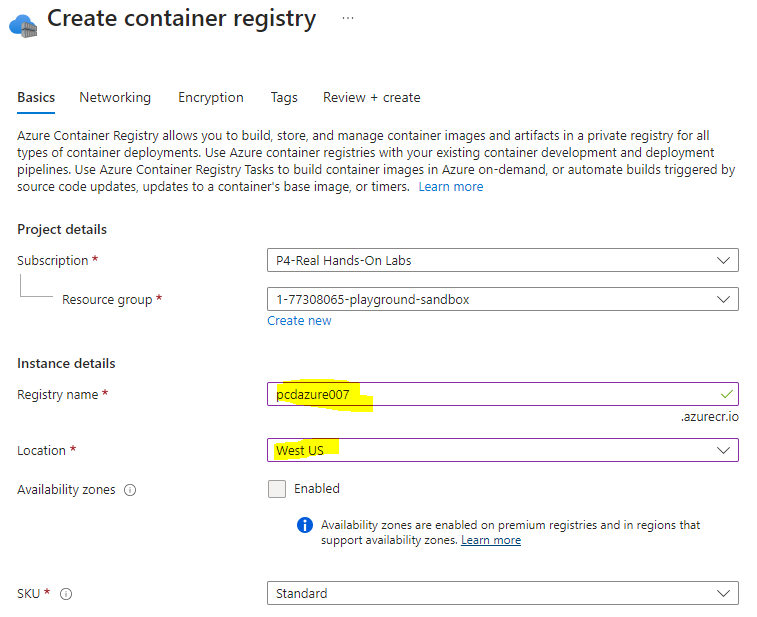

Azure Container

Commands to install on ubuntu
Update the package index
sudo apt-get update
Install packages to allow apt to use the repository over HTTPS
sudo apt-get install \
ca-certificates \
curl \
gnupg \
lsb-release
Add Docker's official GPG key
curl -fsSL https://download.docker.com/linux/ubuntu/gpg | sudo gpg --dearmor -o /usr/share/keyrings/docker-archive-keyring.gpg
Setup a stable repository
echo \
"deb [arch=$(dpkg --print-architecture) signed-by=/usr/share/keyrings/docker-archive-keyring.gpg] https://download.docker.com/linux/ubuntu \
$(lsb_release -cs) stable" | sudo tee /etc/apt/sources.list.d/docker.list > /dev/null
Update the package index
sudo apt-get update
Install docker, containerd
sudo apt-get install docker-ce docker-ce-cli containerd.io
Launching a container
sudo docker run --name mynginx -p 80:80 -d nginx
Docker command explanation
sudo docker run --name mynginx -p 80:80 -d nginx
nginx: docker image namemynginx: name of the container80:80: port that needs to be mapped
Azure Container Registry
this is the place where we save our images for the organisation. this will be a private repo to save the container images.

